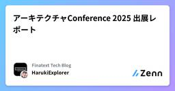
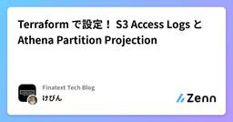
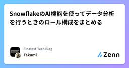

Finatext Tech Blogのフィード
https://zenn.dev/p/finatext
『金融を"サービス"として再発明する』Finatextグループのテックブログです。
フィード

アーキテクチャConference 2025 出展レポート
Finatext Tech Blogのフィード
2025年11月20日（木）・21日（金）にベルサール羽田空港で開催された「アーキテクチャConference 2025」に、Finatextホールディングスとしてゴールドスポンサーで協賛しました！このレポートでは、当社の登壇やブースの様子などをご紹介します。 0. アーキテクチャConference とは？「アーキテクチャConference」は、ファインディ株式会社が主催する、アーキテクチャ設計をテーマにした日本最大級のテックカンファレンスです。技術の進化と組織の多様化が進む中で、より良いアーキテクチャをいかに描き、どう実現していくかを考える場として開催されています。2回目...
2日前

Terraform で設定！ S3 Access Logs と Athena Partition Projection
Finatext Tech Blogのフィード
はじめにこんにちは！ナウキャストのけびんです。先日 Amazon S3 のコスト削減に関する記事を書きました。この中でも触れたように、S3のコスト削減においては不要なデータを特定することが非常に重要です。そのために関係者に直接問い合わせるのも重要ですが、適切にログを取りそれを分析することで機械的に確認することができます。今回は Terraform で S3 の Server Access Log を有効化し、 Athena で分析できるようにする方法を紹介します。https://zenn.dev/finatext/articles/aws-cost-savings-s3-ph...
2日前

SnowflakeのAI機能を使ってデータ分析を行うときのロール構成をまとめる
Finatext Tech Blogのフィード
はじめにこんにちは。ナウキャストでデータエンジニア/LLMエンジニアとして頑張っているTakumiです。SnowflakeでAI機能を使ってデータ分析をやろう！という取り組みが増えてきたように感じています。Snowflake IntelligenceがGAとなったことで、使いやすいUIを伴うデータ分析をSnowflakeのみで完結させることが現実的になりました。一方でAI機能ごとに権限の要件が微妙に異なるので、最小権限の原則に沿った設計をするのが難しくなったなぁと感じました。この記事では、SnowflakeのAI機能(対象は後述)を用いて、データ分析を行うときに必要な最小権...
3日前

Vue Fes Japan 2025 出展レポート
Finatext Tech Blogのフィード
2025年10月25日（土）に大手町プレイス ホール＆カンファレンスで開催された「Vue Fes Japan 2025」に、Finatextホールディングスとして初めて協賛し、ブースを出展してきました！このレポートでは、主に当社ブースの様子や会場の雰囲気などをご紹介します。 0. Vue Fes Japan とは？2018年から開催されている、日本最大級のVue.jsのカンファレンスです。Vue.jsの開発者であるEvan Youをはじめとする著名なスピーカーの方々のセッションから、初学者向けのLTなど様々な発表が行われます。https://vuefes.jp/2025/...
1ヶ月前
dbt の materialization にハマった話
Finatext Tech Blogのフィード
こんにちは。ナウキャストでデータエンジニアをしているふぁるです。弊社で8月に開催したサマーインターンの準備中に、Snowflake上で同名のビューとテーブルを扱った際に、権限が意図せず失われるという問題に直面しました。本記事では、この事例をもとに、その原因となったdbtとSnowflakeの仕様、そして具体的な対策について解説します。 忙しい人向けSnowflakeの仕様: 同一スキーマ内では、同じ名前のビューとテーブルは共存できませんdbtの挙動: dbt run を実行すると、多くの場合、同名のオブジェクト（リレーション）が存在すれば、それを一度 DROP してから CR...
2ヶ月前
Go Conference 2025 LT登壇レポ | Goで実現するGraceful Shutdown: 実運用での課題と解決策
Finatext Tech Blogのフィード
はじめに今回のGo Conferenceも昨年に引き続き、LT枠で参加することができました。https://x.com/_uhzz_/status/1951258593514365173発表内容はこちらです。https://gocon.jp/2025/talks/957443/ 今年の発表内容Graceful Shutdown について発表しました。標準パッケージと実運用それぞれの実装方針を話しました。モチベーションとしては、発表を通じて課題への共感を得ることや、各社それぞれどうしてるか議論するための話題を提供することでした。LTの5分間で伝えきれるか不安はあっ...
2ヶ月前
【エンジニア職】Finatextグループサマーインターン開催レポ -2025年-
Finatext Tech Blogのフィード
はじめにこんにちは、Finatextでエンジニアをしているtoumakidoです。Finatextグループでは、現場エンジニアが中心となって日々さまざまな施策を企画・実施しています。今回はその中でも目玉施策である、サマーインターンシップ - 2025 を開催したので、その模様を紹介します。エンジニア就職を考えている学生の皆さんは、ぜひ今後の参考にしてください！なお、インターンプログラムの内容は、あくまで今年度のものとなります。今後内容が変更になる場合がありますので、あらかじめご了承ください。 エンジニアプログラムの募集と選考エンジニア職はソフトウェアエンジニアプログラ...
2ヶ月前
Snowflakeにおける非構造化データを構造化データに変える選択肢
Finatext Tech Blogのフィード
はじめにこんにちは。ナウキャストでデータエンジニア/LLMエンジニアとして頑張っているTakumiです。Snowflakeにて、非構造化データからデータの抽出を行う機能が続けてPublic Preview、GAとなりました。Document AIAI_EXTRACTAI_PARSEDOCUMENT(OCR)AI_PARSEDOCUMENT(LAYOUT)それぞれ、非構造化データ（PDF等）から情報を抽出する関数ですが使い所が違います。この記事ではそれぞれの適したユースケースと、コストはどうなっているかをお伝えします！!類似の関数として、SNOWFLAKE....
2ヶ月前
GitHub ActionsのSHA Pinning Enforcementを有効にするまでの道のり
Finatext Tech Blogのフィード
2025年8月15日にGitHubからGitHub Actions周りの新機能として "SHA pinning enforcement" 機能がリリースされました。今年の3月にGitHub Actionsでのサプライチェーン攻撃があったことは記憶に新しいと思います。この新機能はこの種のサプライチェーン攻撃のリスクを低下させるためのものだと考えています。まだリリース後間もないので不安定な部分もありますが、セキュリティ向上を目的にFinatextではこの機能の有効化に取り組みました。Finatextでのソフトウェア開発にはある程度の規模があるため、単に機能を有効にするのではなくプラットフォ...
3ヶ月前
Terraform + Slack + AIで権限管理を自動化
Finatext Tech Blogのフィード
はじめにこんにちは！ナウキャストデータAIソリューションドメイン所属の境です。この記事では、社内AIコンテストで制作した「Terraform PRを自動生成するAI駆動システム」の開発の背景や仕組み、実装で工夫した点などをご紹介します。 きっかけデータ基盤の運用をしていると、Terraformでのユーザー権限管理は本当に地味で大変です。毎日のようにユーザー追加や権限変更のPRを作ってるんですが、これは意外と時間かかりますよね。「もっと楽にできないかな…」と思って、Slackで要件を伝えるだけでTerraform PRを自動生成してくれるSlack Appを作ってみました...
3ヶ月前
gpt-2からgpt-ossへの進化をモデル構造から読む
Finatext Tech Blogのフィード
はじめにこんにちは。ナウキャストでデータエンジニア/LLMエンジニアとして頑張っているTakumiです。2025年8月5日 OpenAIがオープンウェイトモデルとしてgpt-ossを発表しました。OpenAIが発表した大規模言語モデルとしては、gpt-2以来のオープンウェイトモデルとなります。ベンチマークの結果等から、既存のモデルと同等ないしは上回るの能力を持っているgpt-ossですが、gpt-2と何が変わったのでしょうか？Github Repositoryのコードを読んで、モデル構造の観点からgpt-2とgpt-ossを比較してみます。※この記事では、比較対象としてg...
3ヶ月前
名前付きロックで実現する排他制御
Finatext Tech Blogのフィード
名前付きロックで実現する排他制御 1. はじめにこんにちは、Finatextでエンジニアをしているtoumakidoです。この記事では名前付きロックを使って、APIサーバで排他制御をする方法を解説しています。名前付きロックはマイナーですが非常に便利です！しかし、APIサーバでの実装には思わぬ落とし穴もあります。今回は、使い所と注意点、GoによるAPIサーバでの実装方法を紹介したいと思います。 名前付きロックとは何かMySQLの名前付きロック（Named Lock）は、データベースレベルで提供される排他制御機構の一つです。GET_LOCK()とRELEASE_LOC...
3ヶ月前
Amazon S3 の月額コストを約30%削減したアプローチ
Finatext Tech Blogのフィード
はじめにこんにちは！ナウキャストのデータエンジニアのけびんです。ナウキャストでは一部のバッチジョブの実行やデータの保存にAWSを利用しています。その中でも、古くから運用しているAWSアカウントでは、特に2024年までのコスト増加が課題となっていました。様々な施策を通じて、2025年にはアカウント全体での月額コストを 約30% 削減することができ、その中でもS3単体での削減が最も大きな成果を上げました。本ブログでは、S3に焦点を当て、実際にどのようにコスト削減を行ったのか、その設定やアーキテクチャをご紹介します。Cost Explorer で確認した対象のAWSアカウント全体...
3ヶ月前
SnowflakeのAWS PrivateLink接続つまずきポイント
Finatext Tech Blogのフィード
はじめにこんにちは。ナウキャストでデータエンジニアをしている島尻です。普段はSnowflakeを中心としたデータ基盤構築をお客様向けに構築する仕事をしています。Snowflakeを導入する際、セキュリティ要件が厳しい企業では、インターネットを経由しないプライベートな接続が求められるケースがあります。例えばAWS上でそのような接続を実現するためには、SnowflakeへのPrivateLink設定を適切に行う必要がありますが、公式ドキュメントを見ても意外とつまずくポイントが多く存在します。https://docs.snowflake.com/ja/user-guide/admi...
3ヶ月前
【Snowflake × Terraform】Cortex Analyst 用の Account Role を作る方法
Finatext Tech Blogのフィード
はじめにこんにちは、ナウキャストで LLM エンジニアをしている Ryotaro です。最近 Cortex Analyst を検証として使う機会が増えてきました。PoC 段階で使う分には sandbox 環境などがあれば、強い権限ですぐに使えますが、本番環境に移行する際には適切な権限管理が必要になってきます。そこで今回初めて Snowflake の Cortex Analyst を使うための Account Role を Terraform で作ってみて、いろいろ勉強になったので記事にしてみました。 想定する読者Snowflake Cortex Analyst を使う ...
3ヶ月前
【開催レポート】2025年度 社内AIコンテストを開催しました！
Finatext Tech Blogのフィード
こんにちは！！ナウキャストのてらにっしー☆です！！今年もFinatextグループ全体でのAI活用を推進すべく、昨年に引き続き2回目の実施となる社内AIコンテスト2025を開催しました！なんと今年の参加者は108名！！！とんでもない熱量で開催することができました！！ 開催概要今年は【ビジネス部門】と【テクノロジー部門】の2部構成で、行いました。それぞれに対し、3つの大きな評価項目と4つの賞を用意し、それらに基づいてアイデアや発表内容を考えてもらいました。今年の賞金は総額100万円！！さらに、実装や集中的なアイデア検討の支援を目的に、1人最大3万円の合宿支援も行いました！ ビ...
3ヶ月前
「おっす」で始める！Goの公式MCP SDK × LangChainGoでエージェント実装
Finatext Tech Blogのフィード
始めにLLMやAIの開発はほとんどPythonで行われているかと思いますが、Goのエコシステムにも素敵なフレームワークがあるので、サクッと使い方を紹介したいと思います。チャットボットなら200行以下で作れちゃいます！ 必要な環境Gohttps://github.com/tmc/langchaingo (v0.1.14以降、現時点未リリース)https://github.com/modelcontextprotocol/go-sdk (v0.2.0)LLMのAPIアクセスこの記事では Bedrock と Claude Sonnet 4 を利用Cline ...
3ヶ月前
AIがプロジェクトドキュメントを書く世界を目指して
Finatext Tech Blogのフィード
はじめに：PMとして避けて通れなかった"あの仕事"こんにちは。Finatextで日々プロジェクトマネージャーとして働いている三戸です。プロジェクトマネージャーという仕事柄、「ドキュメントを作るのも、整えるのも、最終的にはPMの責任」という状況に何度も直面してきました。要件定義書、基本設計書、WBS、受入テスト項目リスト…いわゆる”顧客向けに見せるドキュメント”の数々です。ドキュメント成果物の壁私自身も「完璧な仕様書」を書けるタイプではありませんが、前職では公共案件に携わっていたこともあり、300ページを超えるエビデンス付きの提案書作成やその印刷、毎週と毎月の報告資料作成と...
3ヶ月前
「Developers Summit 2025 Summer」出展レポート
Finatext Tech Blogのフィード
Developers Summit 2025 Summer 出展レポート先日、2025年7月17日（木）・18日（金）の2日間、ＪＰタワー ホール＆カンファレンスで開催された「Developers Summit 2025 Summer（デブサミ夏）」に、Finatextホールディングスとしてブース出展をしてきました！デブサミ夏は毎年開催されているITエンジニアのための一大イベントで、今回は「エンジニアの事業貢献を応援するカンファレンス」というテーマで開催されました。生成AIの登場によって一変したビジネス環境、また長きにわたるIT人材不足など、乗り越えるべき課題が多岐にわたるなか、...
4ヶ月前
Snowflake Intelligenceをはじめから丁寧に
Finatext Tech Blogのフィード
はじめにこんにちは。ナウキャストでデータエンジニアをしているTakumiです。ついにSnowflake IntelligenceがPublic Previewになりました！！！！！Snowflake Intelligence触れるようになったので実際に構築してみました！！実際に作ってみて＆触ってみて感じたSnowflake Intelligenceのいいところ、改善してほしいところを共有します。!Snowflake Intelligence がGAとなったことで、一部手順を書き換えました。 この記事でわかることSnowflake Intelligenceの初期構...
4ヶ月前